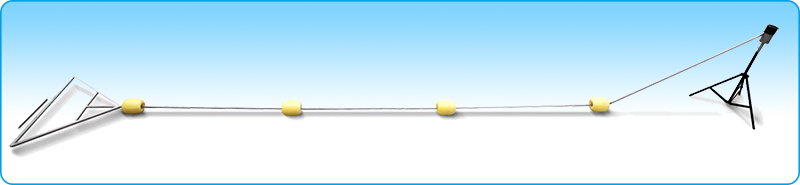

Planning, design and R&D systematic rearing facilities
To achieve modern fisheries (Industry 4.0), we invent aquaculture facilities (e.g., movable aerators and water circulation system) to improve efficiency of aquaculture facilities, energy-saving, and lower costs.
Movable Aerator

Detachable components and easy to transport
Saving cost of electricity to result in less carbon emission
Encouraging the fish to swim and optimizing the feeding conversion rate
Expanding the scope of the disturbance and improving dissolved oxygen area
Avoiding erosion of fishpond bottom
Preventing temperature stratification and allowing for more uniformity and stable water quality
High strength and durability with industrial piping material